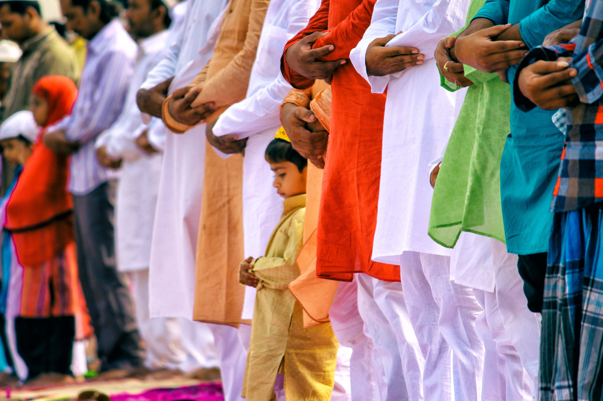
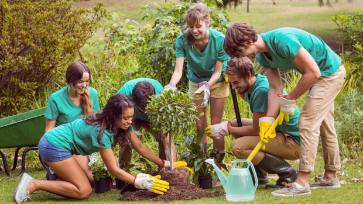

Committed Balanced Muslims
There is no question that putting the book of Allah at the core of our curriculum is a primary factor for our success. The Quran acts as an engine that drives all aspects of life and pushes our students to do their best in everything they do - whether academic, or extra curricular.
Knowledgable Scholars

We take academics seriously. Our students consistently perform in the top 99th percentile across standardized IOWA tests.
Contributing Citizens
We encourage our students to be active and particpate in elections and political activism.
Community Builders
Our students are balanced in all aspects of life. We teach them to go beyond their circle and give build the community they live in.